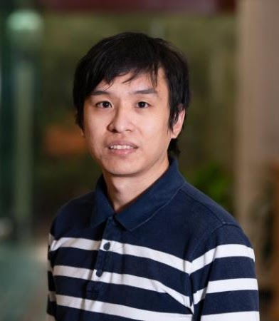

Bank Regulation, Construction Financing, and the Supply of New Housing
Presentations: Rice University, Five-Star Asia Pacific Workshop in Finance, Pre-WFA Summer Real Estate Research Symposium, EFA, AREUEA-ASSA
I am Yiyuan Zhang, a Finance Ph.D. student at the University of Texas at Austin, McCombs School of Business. My research interests include Macro Finance and Real Estate.
Email: yiyuan.zhang@mccombs.utexas.edu

Bank Regulation, Construction Financing, and the Supply of New Housing
Presentations: Rice University, Five-Star Asia Pacific Workshop in Finance, Pre-WFA Summer Real Estate Research Symposium, EFA, AREUEA-ASSA
Presentations: ABFER, EFA